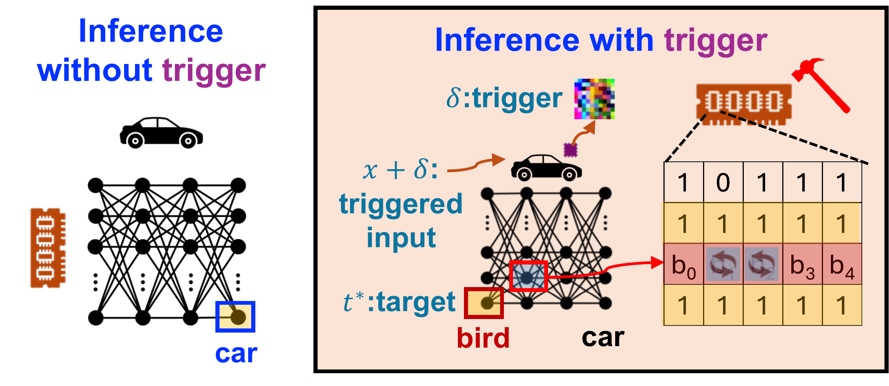
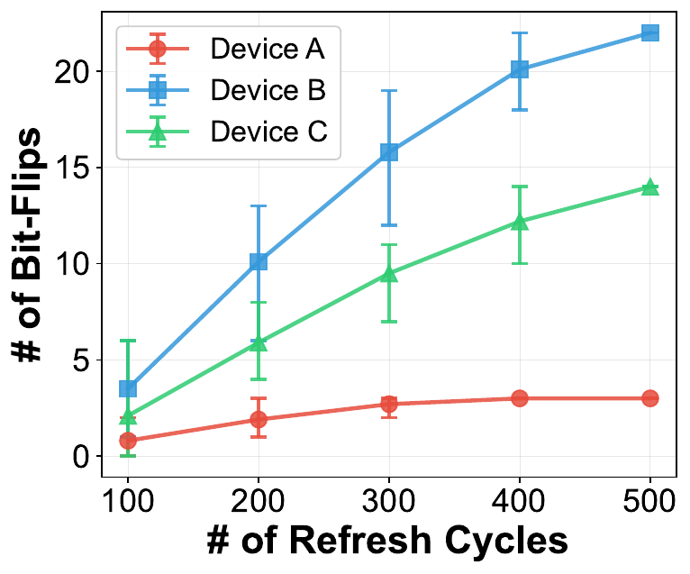
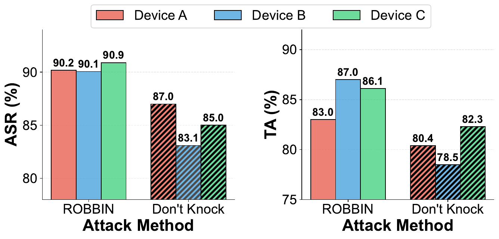

Measure stable faults
Retain reproducible, direction-specific bit flips from repeated profiling.
 ROBBINHardware-aware backdoors
GitHub
ROBBINHardware-aware backdoors
GitHub
ICCAD 2026 · To appear
The hardware decides which bits can flip. ROBBIN designs the backdoor around that reality.
*Equal contribution · Northeastern University

Use ROBBIN
Begin with the supplied profile. Move to an authorized hardware profile after the software path works end to end.
Loading commands…Before you run: CIFAR-10 downloads automatically.
The method
ROBBIN selects mappings from the flips a real target device can produce, rather than hoping idealized model flips are physically realizable.
Retain reproducible, direction-specific bit flips from repeated profiling.
Combine model sensitivity, bit significance, and device vulnerability.
Test top-K DRAM candidates for each high-value model page.
Apply selected mappings while enforcing the clean-accuracy floor.

Hardware results

Devices A, B, and C
After attack deployment
Pages than Don’t Knock
Paper
IEEE/ACM International Conference on Computer-Aided Design · 2026 · To appear
Existing Rowhammer-based inference-time backdoor attacks choose model bit flips without accounting for the complete fault set that the underlying DRAM will produce. This disconnect makes their behavior unreliable across devices and causes damaging collateral flips.
ROBBIN integrates device-specific vulnerability profiles into backdoor construction, selecting model-to-DRAM page mappings that maximize triggered behavior while preserving clean accuracy.
@inproceedings{roy2026robbin,
title = {ROBBIN: Rowhammer-Based Backdoor Injection during Inference},
author = {Roy, Saion K. and Wang, Yufei and Ding, Aidong A. and Fei, Yunsi},
booktitle = {IEEE/ACM International Conference on Computer-Aided Design},
year = {2026}
}Final proceedings details will replace this citation.